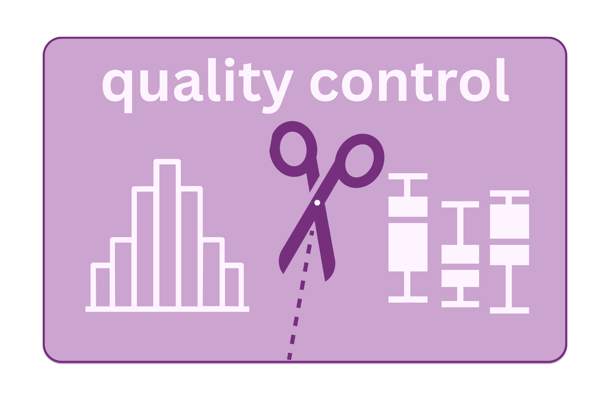

Quality Control

After demultiplexing and primer trimming, quality control filters and trims reads to remove low-quality sequence before the reads are used to infer microbial taxa. The goal is to remove noise introduced by the sequencer while retaining as much real biological signal as possible. This is a step where the decisions you make have downstream consequences that are not always obvious.
What quality filtering does
Truncation cuts reads at a fixed length. Reads shorter than the specified length after trimming are discarded. This approach removes the low-quality 3’ tails that all Illumina reads develop, at the cost of losing some read length.
Quality filtering discard reads (or bases) below a quality threshold.
Looking at a quality report
FastQC is one standard tool for a quick sanity check on raw reads. It produces plots of:
- Per-base quality scores across the read length
- Per-sequence quality distribution
- Sequence length distribution
- Adapter content
- Overrepresented sequences (primers should appear here)
QIIME2’s demux plugin produces similar quality plots and is often the first thing you look at after importing your data within the QIIME2 framework.
TipFastQC
For more information about FastQC, check out this site.
# to run the analysis on all files in a folder ending in .fastq.gz
fastqc *.fastq.gz
TipQIIME2 Demux Summarize
For more information about QIIME2 demux-summarize, check out this site.
qiime2 demux-summarize \
--i-data demux.qza
--o-visualization.qzvThe truncation decision
This is one of the most impactful parameters in the pipeline. Looking at the quality profiles (available in QIIME2’s demux summary, or FastQC):
Illumina quality profiles typically show a characteristic pattern: high-quality bases at the start of the read (Q ≥ 30), followed by a gradual or sharp drop toward the 3′ end. This drop-off point — often called the “elbow” — is a natural guide for where to truncate. A Q30 score means a 1-in-1,000 chance of a base call error; Q25 means roughly 1-in-300. Truncation is generally recommended when quality consistently falls below Q25–30 across the majority of reads.
Two constraints must be balanced:
- Quality: truncate where quality drops, to remove unreliable bases.
- Overlap: for paired-end data, after truncation the forward and reverse reads must still overlap enough to merge — typically at least 20–30 bp.
The overlap available is: overlap = (R1 truncated length + R2 truncated length) − amplicon length. For V3–V4 (~460 bp) with 2×250 reads, truncating R1 to 230 and R2 to 200 leaves 30 bp of overlap — workable. Truncating R2 to 180 leaves only 10 bp — marginal and likely to cause most pairs to fail merging. Quality cannot be the only consideration.
WarningThey must have overlap!
If truncation is too aggressive, you may eliminate the overlap region and reads cannot be merged. To retain around 20-50 overlap that is necessary, you have to ensure that you do not trim the sequences too short.
ImportantThese parameters must be the same for all samples in a study
Changing truncation lengths between samples is not valid — it would affect error rates differently across samples and make them incomparable. Choose one set of parameters for the entire dataset based on the median quality profile across all samples.
A common diagnostic plot is the per-base quality score distribution. These are often a box plot or line plot showing, at each read position, the spread of quality scores across all reads. For this example below, the shaded band is the interquartile range (middle 50% of reads), the solid line is the median, and the thin lines are the whiskers. Toggle between R1 and R2 to see how the quality degrades over the length of the read.
TipReading the plot
The green zone (Q ≥ 28) is good quality. The yellow zone (Q 20–28) is acceptable but worth watching. The red zone (Q < 20) should be trimmed before analysis. Notice that R2 dips into the yellow zone well before position 250 — this is normal and is why DADA2 truncation lengths for R1 and R2 are set independently.
ImportantReproducibility in truncation
Make sure that you carefully note the selection of where to truncate based on quality scores for both the forward and reverse reads. This is necessary for others to reproduce your results.
TipDADA2 filterAndTrim
DADA2 is a package that can be run using R.
# In R using the dada2 package:
filtered <- filterAndTrim(
fwd = forward_reads,
filt = forward_filtered,
rev = reverse_reads,
filt.rev = reverse_filtered,
truncLen = c(230, 200), # truncate R1 at 230 bp, R2 at 200 bp
maxEE = c(2, 2), # maximum expected errors per read
truncQ = 2, # truncate at quality score 2 or below
rm.phix = TRUE, # remove PhiX reads if present
compress = TRUE,
multithread = TRUE
)
NoteQIIME2 denoise-paired
The same analysis can be run using the QIIME2 framework in the command line.
# In command line using the QIIME2 framework:
qiime dada2 denoise-paired \
--i-demultiplexed-seqs demultiplexed-sequences.qza \
--p-trunc-len-f 230 \
--p-trunc-len-r 200 \
--p-max-ee-f 2 \
--p-max-ee-r 2 \
--p-n-threads N \
--o-representative-sequences asv-sequences-0.qza \
--o-table feature-table-0.qza \
--o-denoising-stats dada2-stats.qzaExpected errors vs. quality score cutoffs
DADA2 uses the expected errors framework: rather than filtering on per-base quality scores directly, it computes the expected number of errors in an entire read as the sum of the error probabilities at each position. maxEE = 2 means: discard any read where the expected number of errors exceeds 2.
This is more principled than “discard reads with any base below Q20” because it considers the whole read rather than being thrown off by a single low-quality base.
What gets discarded
After filtering, check how many reads were retained per sample. Typical retention rates: - 70–90% is normal - <50% suggests something went wrong: poor run quality, very long amplicon with insufficient overlap, or parameters that are too aggressive
A sample that loses >80% of its reads may not have enough depth for reliable analysis and may need to be excluded.